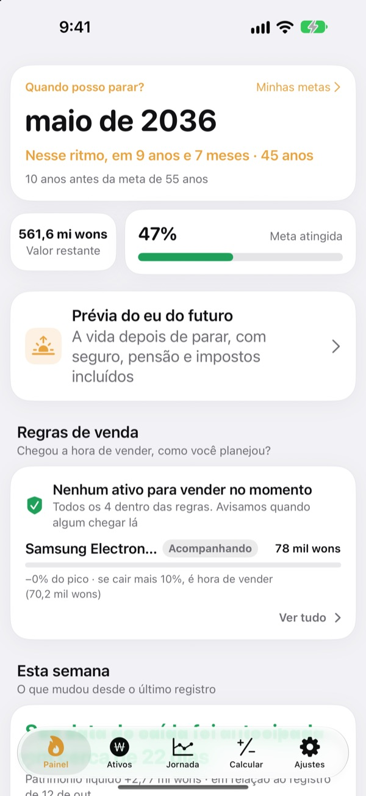
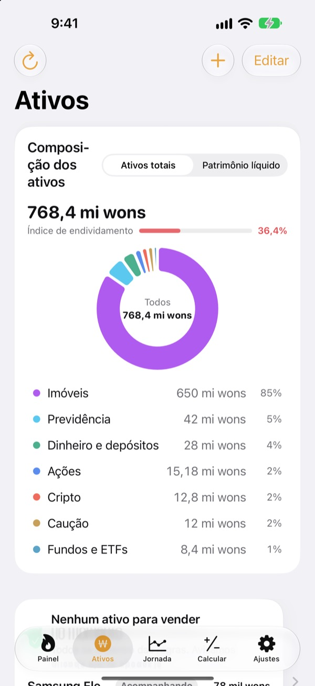
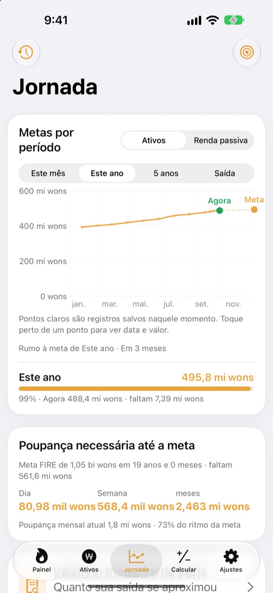
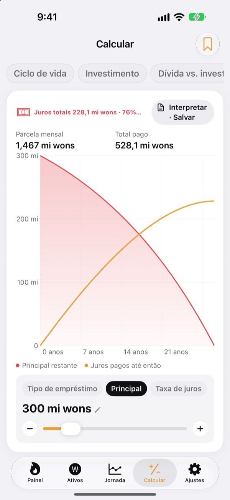

Saiba quando largar o emprego.
Com números, não no chute.
Informe quanto gasta e quanto já juntou, e aparece o mês em que você pode sair. Sempre que seu patrimônio muda, você vê se essa data chegou mais perto ou ficou mais longe.
Não precisa de conta. Seus registros ficam no seu aparelho.

Descubra sua data de saída
Arraste os controles. É a mesma conta que o app faz na primeira tela.
Ainda fazendo de cabeça a conta do "já dá para sair?"
Com conta no banco, corretora, previdência e caução de aluguel cada um num lugar, até o total fica nebuloso, e a data de saída vira um chute. O Toesagak junta tudo numa tela só e recalcula sem parar o mês em que você pode sair a partir desse total.
Todo o patrimônio numa tela só
Imóveis, ações, fundos e ETFs, previdência, dinheiro e depósitos, cauções, cripto e empréstimos, agrupados por tipo, com patrimônio total, patrimônio líquido e índice de endividamento.
As cotações de ações e cripto são buscadas para manter os valores em dia, e uma captura de tela da sua corretora traz ativos e valores de uma vez.

Quanto por dia até a meta
Veja as metas do mês, do ano, de cinco anos e da aposentadoria junto com seus registros anteriores, num gráfico só. O app também diz quanto poupar por dia, semana ou mês para seguir no caminho.
Quando o patrimônio muda, o registro da semana é salvo sozinho, e o histórico se forma sem esforço.

Faça as contas antes das grandes decisões
Calculadoras de patrimônio ao longo da vida, investimento, quitar dívida ou investir, empréstimos, poupança e depósitos, poder de compra do salário e dinheiro convertido em horas. Arraste um valor e o gráfico se redesenha, com a curva anterior em pontilhado para comparar.
Dê nome às simulações que você usa sempre e salve.

Três passos para começar
- 1
Informe seus gastos e sua idade
Números aproximados bastam. Sua data de saída aparece na hora.
- 2
Cadastre seus ativos
Quanto mais detalhado, mais precisa fica a data.
- 3
Dê uma olhada de vez em quando
Os registros semanais se acumulam sozinhos, e o app pode avisar todo dia 1º.
Como o app faz as contas
- Meta
- Um ano de gastos depois de parar ÷ taxa de retirada segura (a 4%, são 25 anos de gastos)
- Data de saída
- O mês em que o patrimônio líquido, somado ao que você poupa por mês e rendendo ao retorno esperado, atinge a meta
- Patrimônio total
- Tudo o que você tem, somado
- Patrimônio líquido
- Patrimônio total menos dívidas, como empréstimos
- Progresso
- Patrimônio líquido ÷ meta. Também dá para acompanhar pela renda passiva
- O que você pode ajustar
- Gasto mensal, taxa de retirada de 2 a 6%, retorno esperado de 0 a 12%, a idade em que gostaria de parar
Todos os resultados são cálculos de referência com base no que você informa e não são recomendação de investimento.
Perguntas
Onde ficam meus registros?
Só no seu aparelho. Não há cadastro e nada é enviado ao desenvolvedor. Ative a sincronização com o iCloud nos Ajustes para ver os mesmos registros no iPhone e no iPad pela sua própria conta iCloud.
As cotações não atualizam.
Ações dos EUA e da Coreia, cripto e câmbio funcionam sem nenhuma configuração. Confira sua conexão com a internet e se o ticker ou código está certo. Os preços de apartamentos usam dados imobiliários públicos da Coreia e exigem uma chave de serviço inserida nos Ajustes.
Qual a diferença entre patrimônio total e patrimônio líquido?
Patrimônio total é a soma de tudo o que você tem. Patrimônio líquido é esse valor menos dívidas, como empréstimos. A data de saída é calculada pelo patrimônio líquido.
Como passo meus registros para um aparelho novo?
Use Exportar nos Ajustes para criar um arquivo de backup, guarde no app Arquivos, no iCloud Drive ou por e-mail e restaure no aparelho novo. Os backups nunca incluem chaves de API. O app também guarda automaticamente no aparelho seus 20 backups mais recentes.
Como funcionam os alertas de venda?
Para cada ativo, defina quanto ele pode cair a partir do pico ou um preço-alvo. Quando ele cruza essa linha, você recebe um aviso. Na alta, o app fica quieto. As cotações são verificadas quando você abre o app e quando o iOS permite em segundo plano (em geral a cada poucas horas), então não é um monitoramento em tempo real.
Posso manter meus números longe de olhares curiosos?
Ative o Bloqueio do App nos Ajustes para abrir o app com Face ID ou código. Com o bloqueio ativo, o lembrete mensal também não mostra nenhum número.
Dá para conhecer o app antes?
Ative os Dados de Demonstração nos Ajustes para explorar todas as telas com o patrimônio de uma pessoa fictícia. Ao desativar, seus registros voltam na hora. Os Dados de Demonstração não ficam disponíveis com a sincronização do iCloud ativa.
Como apago todos os meus dados?
Ao apagar o app, todos os registros guardados no aparelho são apagados. Se quiser manter uma cópia, exporte antes um arquivo de backup nos Ajustes.
Posso investir com base nesses números?
Os resultados do Toesagak são cálculos de referência baseados no que você informa e num retorno estimado. Não são recomendação de investimento, e o resultado real depende do mercado e da sua situação.
Encontrou um bug, tem uma ideia ou uma dúvida? Escreva para leeo@kakao.com.